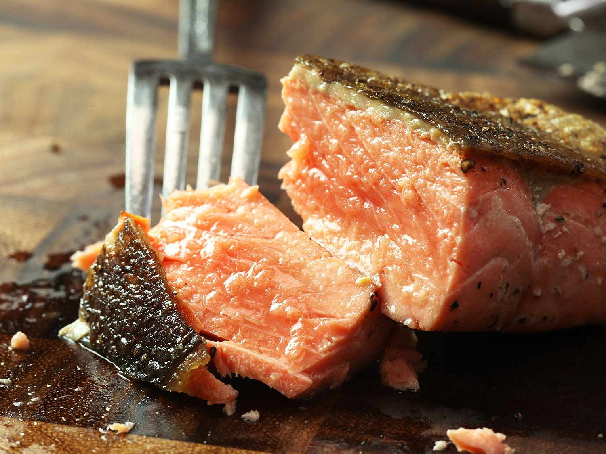

Elliot's Pan-Seared Salmon Recipe

Recipe Summary
Enjoy a delicious salmon from your home with this easy-to-follow recipe!
Ingredients
- 1 10 oz salmon
- 1 lemon
- Salt and pepper
Steps
- Press salmon fillets between paper towels to dry surfaces thoroughly.
Season on all sides with salt and pepper.
- In a large stainless, cast iron, or carbon steel skillet, heat oil over medium-high heat until
shimmering. Reduce heat to medium-low, then add a salmon fillet, skin side down.
Press firmly in place for 10 seconds, using the back of a flexible fish spatula, to prevent the
skin from buckling. Add remaining fillets one at a time, pressing each with spatula for 10 seconds,
until all fillets are in the pan.
- Cook, pressing gently on back of fillets occasionally to ensure good contact with skin, until skin
releases easily from pan, about 4 minutes.
- Using spatula and a fork, flip salmon fillets and cook on second side for 15 seconds, then transfer
to a paper towel–lined plate to drain. Serve.